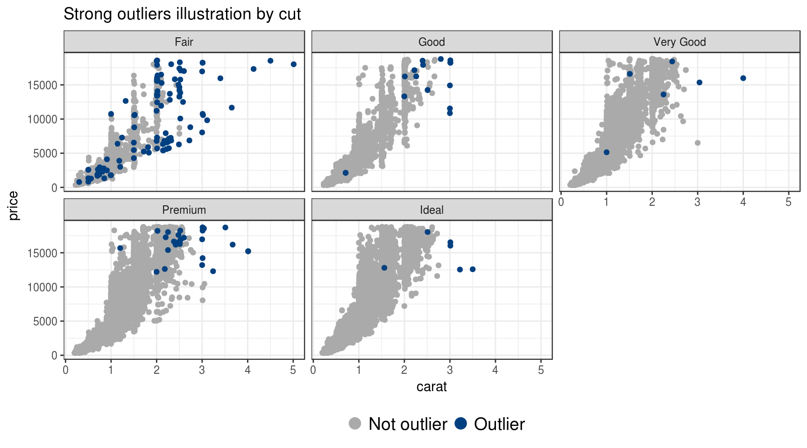
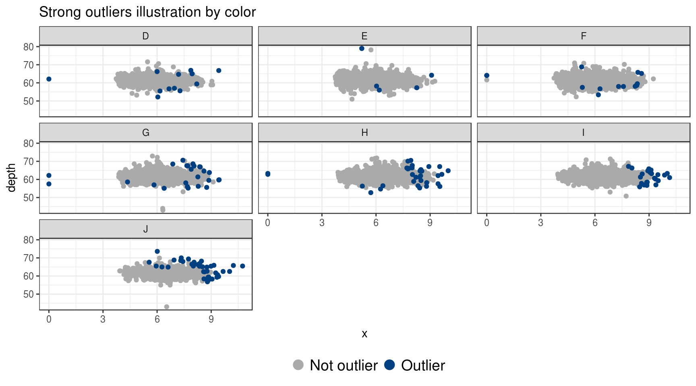
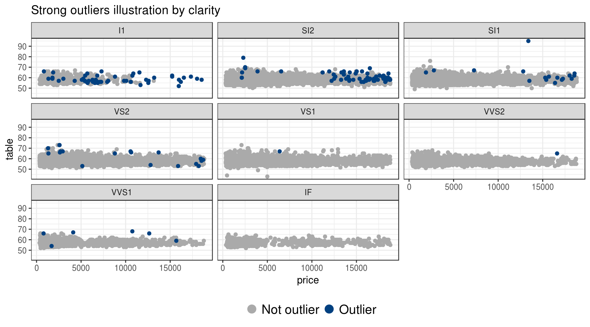

Combined outlier detection with dplyr and ruler
Prologue
During the process of data analysis one of the most crucial steps is to identify and account for outliers, observations that have essentially different nature than most other observations. Their presence can lead to untrustworthy conclusions. The most complicated part of this task is to define a notion of “outlier”. After that, it is straightforward to identify them based on given data.
There are many techniques developed for outlier detection. Majority of them deal with numerical data. This post will describe the most basic ones with their application using dplyr and ruler packages.
After reading this post you will know:
- Most basic outlier detection techniques.
- A way to implement them using
dplyrandruler. - A way to combine their results in order to obtain a new outlier detection method.
- A way to discover notion of “diamond quality” without prior knowledge of this topic (as a happy consequence of previous point).
Overview
We will perform an analysis with the goal to find not typical diamonds listed in diamonds dataset from ggplot2 package. Here one observation represents one diamond and is stored as a row in data frame.
The way we will do that is by combining different outlier detection techniques to identify rows which are “strong outliers”, i.e. which might by considered outliers based on several methods.
Packages required for this analysis:
library(dplyr)
library(tidyr)
library(ggplot2)
library(ruler)Outlier detection methods
To do convenient outlier detection with ruler it is better to define notion of non-outlier in form of the rule “Observation is not an outlier if …”. This way actual outliers are considered as rule breakers, objects of interest of ruler package. Note that definition of non-outlier is essentially a definition of outlier because of total two possibilities.
Z-score
Z-score, also called a standard score, of an observation is [broadly speaking] a distance from the population center measured in number of normalization units. The default choice for center is sample mean and for normalization unit is standard deviation.
⬛ Observation is not an outlier based on z-score if its absolute value of default z-score is lower then some threshold (popular choice is 3).
Here is the function for identifying non-outliers based on z-score:
isnt_out_z <- function(x, thres = 3, na.rm = TRUE) {
abs(x - mean(x, na.rm = na.rm)) <= thres * sd(x, na.rm = na.rm)
}It takes a numeric vector as input and returns logical vector of the same length indicating whether input value is a non-outlier.
Z-score with MAD
Median Absolute Deviation is a robust normalization unit based on median as a population center. In order to use MAD “as a consistent estimator for the estimation of the standard deviation” one takes its value multiplied by a factor. This way base R function mad is implemented.
⬛ Observation is not an outlier based on MAD if its absolute value of z-score with median as center and MAD as normalization unit is lower then some threshold (popular choice is 3).
isnt_out_mad <- function(x, thres = 3, na.rm = TRUE) {
abs(x - median(x, na.rm = na.rm)) <= thres * mad(x, na.rm = na.rm)
}Tukey’s fences
Tukey’s fences is a technique used in box plots. The non-outlier range is defined with \([Q_1 - k(Q_3 - Q_1),~ Q_3 + k(Q_3 - Q_1)]\), where \(Q_1\) and \(Q_3\) are the lower and upper quartiles respectively, \(k\) - some nonnegative constant (popular choice is 1.5).
⬛ Observation is not an outlier based on Tukey’s fences if its value lies in non-outlier range.
isnt_out_tukey <- function(x, k = 1.5, na.rm = TRUE) {
quar <- quantile(x, probs = c(0.25, 0.75), na.rm = na.rm)
iqr <- diff(quar)
(quar[1] - k * iqr <= x) & (x <= quar[2] + k * iqr)
}Mahalanobis distance
All previous approaches were created for univariate numerical data. To detect outliers in multivariate case one can use Mahalanobis distance to reduce to univariate case and then apply known techniques.
⬛ Observation is not an outlier based on Mahalanobis distance if its distance is not an outlier.
maha_dist <- . %>% select_if(is.numeric) %>%
mahalanobis(center = colMeans(.), cov = cov(.))
isnt_out_maha <- function(tbl, isnt_out_f, ...) {
tbl %>% maha_dist() %>% isnt_out_f(...)
}This function takes as input a data frame of interest (with possible non-numeric columns which are ignored) and function performing univariate outlier detection. It returns a logical vector of the same length as number of rows in input data frame.
To read more about practical usefulness of Mahalanobis distance in detecting outliers go to Steffen’s very helpful post.
Using dplyr and ruler
Definition of non-outlier row
Package ruler, based on dplyr grammar of data manipulation, offers tools for validating the following data units: data as a whole, group [of rows] as a whole, column as a whole, row as a whole, cell. Our primary interest is row as a whole. However, using this framework, we can construct several approaches for definition of the non-outlier row:
- Row is not an outlier based on some column if it doesn’t contain outlier (computed based on the target column) on the intersection with that column. In other words, first a univariate outlier detection is performed based solely on data from target column and then all rows containing non-outliers are named non-outlier rows.
- Row is not an outlier based on Mahalanobis distance if its distance (computed based on the selected numeric columns) is not an outlier.
- Row is not an outlier based on grouping if it is a part of a non-outlier group [of rows]. A group [of rows] is not an outlier if its summary value is not an outlier among summary values of other groups.
Note that all listed approached depend on the choice of the univariate outlier detection method. We will use all three previously listed univariate techniques.
isnt_out_funs <- funs(
z = isnt_out_z,
mad = isnt_out_mad,
tukey = isnt_out_tukey
)Implementation
In ruler framework rules are defined in packs (to learn more go to ruler README and vignettes).
Column based non-outlier rows
For diamonds dataset rules for column based non-outlier rows can be defined based on 7 numeric columns and 3 presented univariate detection methods. There is a convenient way of computing all them at once using scoped variant of dplyr::transmute():
diamonds %>% transmute_if(is.numeric, isnt_out_funs)
## # A tibble: 53,940 x 21
## carat_z depth_z table_z price_z x_z y_z z_z carat_mad depth_mad
## <lgl> <lgl> <lgl> <lgl> <lgl> <lgl> <lgl> <lgl> <lgl>
## 1 TRUE TRUE TRUE TRUE TRUE TRUE TRUE TRUE TRUE
## 2 TRUE TRUE TRUE TRUE TRUE TRUE TRUE TRUE TRUE
## 3 TRUE FALSE FALSE TRUE TRUE TRUE TRUE TRUE FALSE
## 4 TRUE TRUE TRUE TRUE TRUE TRUE TRUE TRUE TRUE
## 5 TRUE TRUE TRUE TRUE TRUE TRUE TRUE TRUE TRUE
## # ... with 5.394e+04 more rows, and 12 more variables: table_mad <lgl>,
## # price_mad <lgl>, x_mad <lgl>, y_mad <lgl>, z_mad <lgl>,
## # carat_tukey <lgl>, depth_tukey <lgl>, table_tukey <lgl>,
## # price_tukey <lgl>, x_tukey <lgl>, y_tukey <lgl>, z_tukey <lgl>The result has outputs for 21 methods. Their names are of the form <column name>_<method name>. So the name ‘carat_z’ is interpreted as result of univariate method with name ‘z’ for column with name ‘carat’.
Mahalanobis based non-outlier rows
To define non-outlier rows based on Mahalanobis distance one should apply univariate method for distances computed for some subset of numeric columns. To simplify a little bit, we will one “subset” with all numeric columns and all listed methods:
diamonds %>%
transmute(maha = maha_dist(.)) %>%
transmute_at(vars(maha = maha), isnt_out_funs)
## # A tibble: 53,940 x 3
## maha_z maha_mad maha_tukey
## <lgl> <lgl> <lgl>
## 1 TRUE TRUE TRUE
## 2 TRUE FALSE FALSE
## 3 TRUE FALSE FALSE
## 4 TRUE TRUE TRUE
## 5 TRUE TRUE TRUE
## # ... with 5.394e+04 more rowsThe result has outputs for 3 methods. Their names are considered as method names. Note that with this approach outlier rows are not only the ones far from multivariate center, but also the ones that are unnaturally close to it.
Group based non-outlier rows
Definition of non-outlier rows based on grouping depends on group summary function and univariate outlier detection method. As grouping column we will choose all non-numeric columns (cut, color and clarity) united into one called group (for later easier imputation of non-outlier rows). As reasonable summary functions we will choose mean value of some numeric column (total of 7 functions):
data_tbl <- diamonds %>%
unite(col = "group", cut, color, clarity)
compute_group_non_outliers <- . %>%
# Compute per group mean values of columns
group_by(group) %>%
summarise_if(is.numeric, mean) %>%
ungroup() %>%
# Detect outliers among groups
mutate_if(is.numeric, isnt_out_funs) %>%
# Remove unnecessary columns
select_if(Negate(is.numeric))
data_tbl %>% compute_group_non_outliers()
## # A tibble: 276 x 22
## group carat_z depth_z table_z price_z x_z y_z z_z carat_mad
## <chr> <lgl> <lgl> <lgl> <lgl> <lgl> <lgl> <lgl> <lgl>
## 1 Fair_D_I1 FALSE TRUE TRUE TRUE TRUE TRUE TRUE FALSE
## 2 Fair_D_IF TRUE TRUE TRUE TRUE TRUE TRUE TRUE TRUE
## 3 Fair_D_SI1 TRUE TRUE TRUE TRUE TRUE TRUE TRUE TRUE
## 4 Fair_D_SI2 TRUE TRUE TRUE TRUE TRUE TRUE TRUE TRUE
## 5 Fair_D_VS1 TRUE TRUE TRUE TRUE TRUE TRUE TRUE TRUE
## # ... with 271 more rows, and 13 more variables: depth_mad <lgl>,
## # table_mad <lgl>, price_mad <lgl>, x_mad <lgl>, y_mad <lgl>,
## # z_mad <lgl>, carat_tukey <lgl>, depth_tukey <lgl>, table_tukey <lgl>,
## # price_tukey <lgl>, x_tukey <lgl>, y_tukey <lgl>, z_tukey <lgl>The result has outputs for 21 methods applied to the 276 groups. Their names are of the form <column name for summary function>_<method name>. So the name ‘carat_z’ is interpreted as result of method ‘z’ for summary function equal to mean value of ‘carat’ column. Column group defines names of the groupings.
Exposure
Column and Mahalanobis based definition of non-outlier rows can be expressed with row packs and group based - as group packs.
row_packs_isnt_out <- row_packs(
# Non-outliers based on some column
column = . %>% transmute_if(is.numeric, isnt_out_funs),
# Non-outliers based on Mahalanobis distance
maha = . %>% transmute(maha = maha_dist(.)) %>%
transmute_at(vars(maha = maha), isnt_out_funs)
)
group_packs_isnt_out <- group_packs(
# Non-outliers based on grouping
group = compute_group_non_outliers,
.group_vars = "group"
)Application of all those packs is called exposing process. The result is an exposure from which we can extract tidy data validation report using get_report.
# Don't remove obeyers to compute total number of applied rules
full_report <- data_tbl %>%
expose(row_packs_isnt_out, group_packs_isnt_out,
.remove_obeyers = FALSE) %>%
get_report()
used_rules <- full_report %>%
distinct(pack, rule)
breaker_report <- full_report %>%
filter(!(value %in% TRUE))used_rules contains data about all definitions of non-outlier rows applied to data. They are encoded with combination of columns pack and rule.
breaker_report contains data about data units that break certain rules. Packs column and maha has actual row numbers of data_tbl listed in id column of report (for rows which should be considered as outliers).
On the other hand, pack group defines group pack and is represented in breaker_report with id 0. To obtain row outliers based on grouping we need to expand those rows with information about rows in the data that belong to those groups. This can be done using dplyr::left_join():
group_breakers <- breaker_report %>%
# Filter group packs
filter(pack == "group") %>%
# Expand rows by matching group with its rows
select(-id) %>%
left_join(
y = data_tbl %>% transmute(var = group, id = 1:n()),
by = "var"
) %>%
select(pack, rule, var, id, value)
outliers <- bind_rows(
breaker_report %>% filter(pack != "group"),
group_breakers
) %>%
select(pack, rule, id)
# Not all group based definitions resulted with outliers
outliers %>%
count(pack, rule) %>%
filter(pack == "group") %>%
print(n = Inf)
## # A tibble: 13 x 3
## pack rule n
## <chr> <chr> <int>
## 1 group carat_mad 37
## 2 group carat_tukey 37
## 3 group carat_z 29
## 4 group depth_mad 1093
## 5 group depth_tukey 1016
## 6 group depth_z 156
## 7 group price_mad 209
## 8 group price_tukey 1146
## 9 group price_z 44
## 10 group table_mad 920
## 11 group table_tukey 8
## 12 group table_z 7
## 13 group z_z 23Tibble outliers contains data about outlier rows. Combination of columns pack and rule defines non-outlier/outlier definition approach and column id defines row number of input data frame that should be considered an outlier based on the definition.
Definitions with most outliers are as follows:
outliers %>%
count(pack, rule, sort = TRUE)
## # A tibble: 37 x 3
## pack rule n
## <chr> <chr> <int>
## 1 maha maha_mad 6329
## 2 maha maha_tukey 5511
## 3 column price_mad 5386
## 4 column price_tukey 3540
## 5 column table_mad 2560
## # ... with 32 more rowsTwo out of three Mahalanobis based definition yielded the most row outliers.
Combination
Given outliers data frame, one can do whatever he/she wants to identify outliers. Here we will use the basic combination approach based on average score.
Combined outlier detection score for certain row can be defined as share of applied methods that tagged it as outlier. Alternatively one can define it just as number of those methods as it will only change absolute value of the result and not the order.
outlier_score <- outliers %>%
group_by(id) %>%
# nrow(used_rules) equals total number of applied methods
summarise(score = n() / nrow(used_rules))
# Top 10 outliers
outlier_score %>% arrange(desc(score)) %>% slice(1:10)
## # A tibble: 10 x 2
## id score
## <int> <dbl>
## 1 26432 0.5777778
## 2 27416 0.5777778
## 3 27631 0.5777778
## 4 27131 0.4666667
## 5 23645 0.4222222
## 6 26445 0.4222222
## 7 26745 0.4000000
## 8 27430 0.4000000
## 9 15952 0.3777778
## 10 17197 0.3777778Finally we will tag those rows as strong outliers which has score more than 0.2 (subjective threshold which should be researched more).
diam_tbl <- diamonds %>%
mutate(id = 1:n()) %>%
left_join(y = outlier_score, by = "id") %>%
mutate(
score = coalesce(score, 0),
is_out = if_else(score > 0.2, "Outlier", "Not outlier")
)
# Total number of outliers
sum(diam_tbl$score > 0.2)Tibble diam_tbl is basically the diamonds but with three more columns: id for row number, score for combined outlier score and is_out for non-outlier/outlier tag.
Plots illustrating strong outliers:
theme_set(theme_bw())
plot_outliers <- function(tbl, x, y, facet_var) {
tbl %>%
arrange(is_out) %>%
ggplot(aes_string(x, y, colour = "is_out")) +
geom_point() +
facet_wrap(facets = facet_var) +
scale_colour_manual(values = c("#AAAAAA", "#004080")) +
guides(colour = guide_legend(title = NULL,
override.aes = list(size = 4))) +
labs(title = paste0("Strong outliers illustration by ", facet_var)) +
theme(legend.position = "bottom",
legend.text = element_text(size = 14))
}
diam_tbl %>% plot_outliers("carat", "price", facet_var = "cut")
diam_tbl %>% plot_outliers("x", "depth", facet_var = "color")
diam_tbl %>% plot_outliers("price", "table", facet_var = "clarity")
Based on those plots we see the complicated nature of “strong outliers”. They are not necessary located “on the edge” of two-dimensional scatter plots, but most extreme cases are tagged as outliers.
Also one interesting observation: most outliers are concentrated in the combination of “Fair” cut, “J” colour and “I1” clarity which are worst options among their features. The reason of this effect is group-based definitions of non-outliers which tagged certain groups more than others:
breaker_report %>%
filter(pack == "group") %>%
count(var, sort = TRUE) %>%
print(n = 10)
## # A tibble: 47 x 2
## var n
## <chr> <int>
## 1 Fair_D_I1 7
## 2 Fair_J_I1 7
## 3 Fair_H_VVS1 6
## 4 Ideal_J_I1 6
## 5 Fair_J_VVS1 5
## 6 Fair_G_VVS1 4
## 7 Fair_D_VVS1 3
## 8 Fair_E_I1 3
## 9 Fair_F_I1 3
## 10 Fair_H_I1 3
## # ... with 37 more rowsHere we see that “Fair” cut is among majority of top breaker groups. There are also some interesting combinations: Fair_D_I1 (“worst”-“best”-“worst”), Fair_J_I1 (“worst”-“worst”-“worst”), Ideal_J_I1 (“best”-“worst”-“worst”).
This fact might be interpreted as suggested combined outlier detection approach discovered notion of diamond quality without prior knowledge about it.
Conclusions
- Using only basic outlier detection methods one can achieve insightful results by combining them. Observations which are tagged as outlier by more than some threshold number of methods might be named as “strong outliers”. Those should be considered as outliers based on the whole data rather then on separate features.
- With
rulercombining results of several outlier detection methods is straightforward due to the format of tidy data validation report. - Suggested “strong outlier” observations in
diamondsdataset are not only those with extreme numerical values but also ones based on quality of diamonds. This is achieved without prior knowledge of “diamond quality” notion.
sessionInfo()
## R version 3.4.3 (2017-11-30)
## Platform: x86_64-pc-linux-gnu (64-bit)
## Running under: Ubuntu 16.04.3 LTS
##
## Matrix products: default
## BLAS: /usr/lib/openblas-base/libblas.so.3
## LAPACK: /usr/lib/libopenblasp-r0.2.18.so
##
## locale:
## [1] LC_CTYPE=ru_UA.UTF-8 LC_NUMERIC=C
## [3] LC_TIME=ru_UA.UTF-8 LC_COLLATE=ru_UA.UTF-8
## [5] LC_MONETARY=ru_UA.UTF-8 LC_MESSAGES=ru_UA.UTF-8
## [7] LC_PAPER=ru_UA.UTF-8 LC_NAME=C
## [9] LC_ADDRESS=C LC_TELEPHONE=C
## [11] LC_MEASUREMENT=ru_UA.UTF-8 LC_IDENTIFICATION=C
##
## attached base packages:
## [1] methods stats graphics grDevices utils datasets base
##
## other attached packages:
## [1] bindrcpp_0.2 ruler_0.1.0 ggplot2_2.2.1 tidyr_0.7.2 dplyr_0.7.4
##
## loaded via a namespace (and not attached):
## [1] Rcpp_0.12.14 knitr_1.17 bindr_0.1 magrittr_1.5
## [5] tidyselect_0.2.3 munsell_0.4.3 colorspace_1.3-2 R6_2.2.2
## [9] rlang_0.1.4 plyr_1.8.4 stringr_1.2.0 tools_3.4.3
## [13] grid_3.4.3 gtable_0.2.0 htmltools_0.3.6 lazyeval_0.2.1
## [17] yaml_2.1.16 rprojroot_1.2 digest_0.6.13 assertthat_0.2.0
## [21] tibble_1.3.4 bookdown_0.5 purrr_0.2.4 glue_1.2.0
## [25] evaluate_0.10.1 rmarkdown_1.8 blogdown_0.4 labeling_0.3
## [29] stringi_1.1.6 keyholder_0.1.1 compiler_3.4.3 scales_0.5.0
## [33] backports_1.1.2 pkgconfig_2.0.1